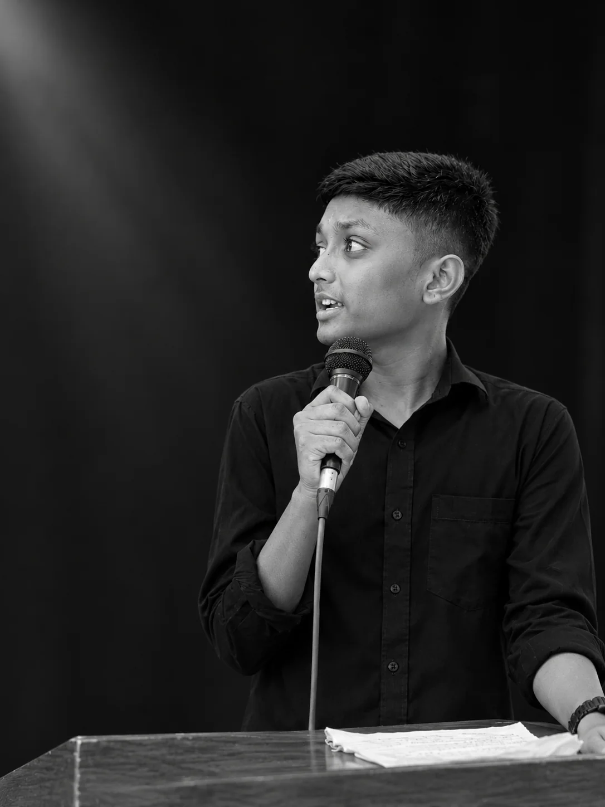
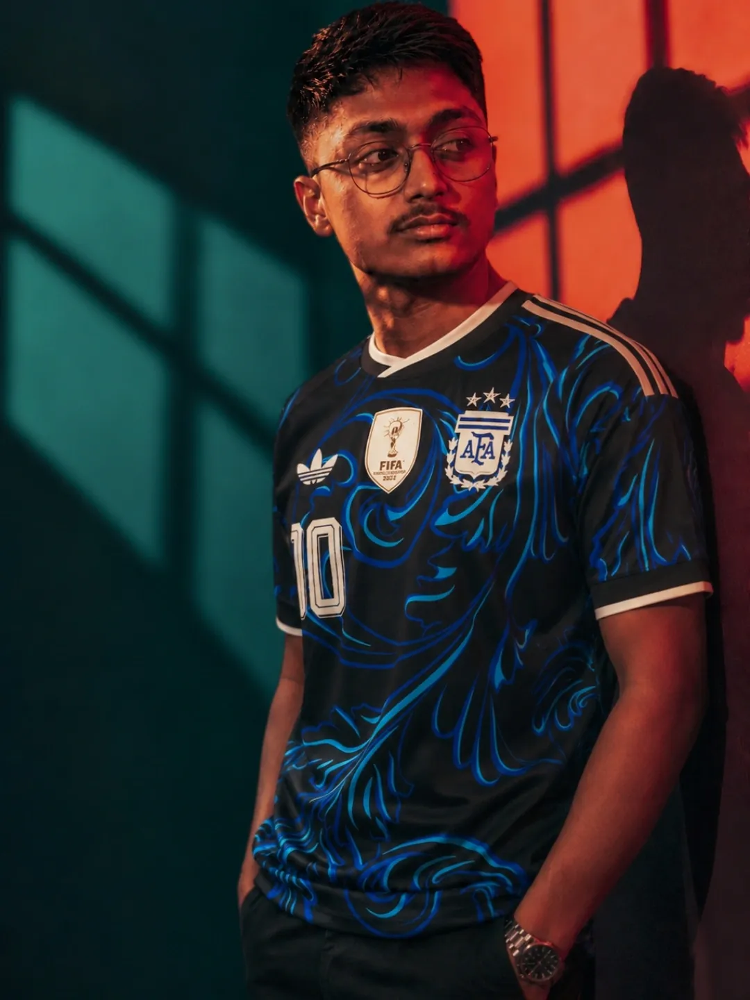
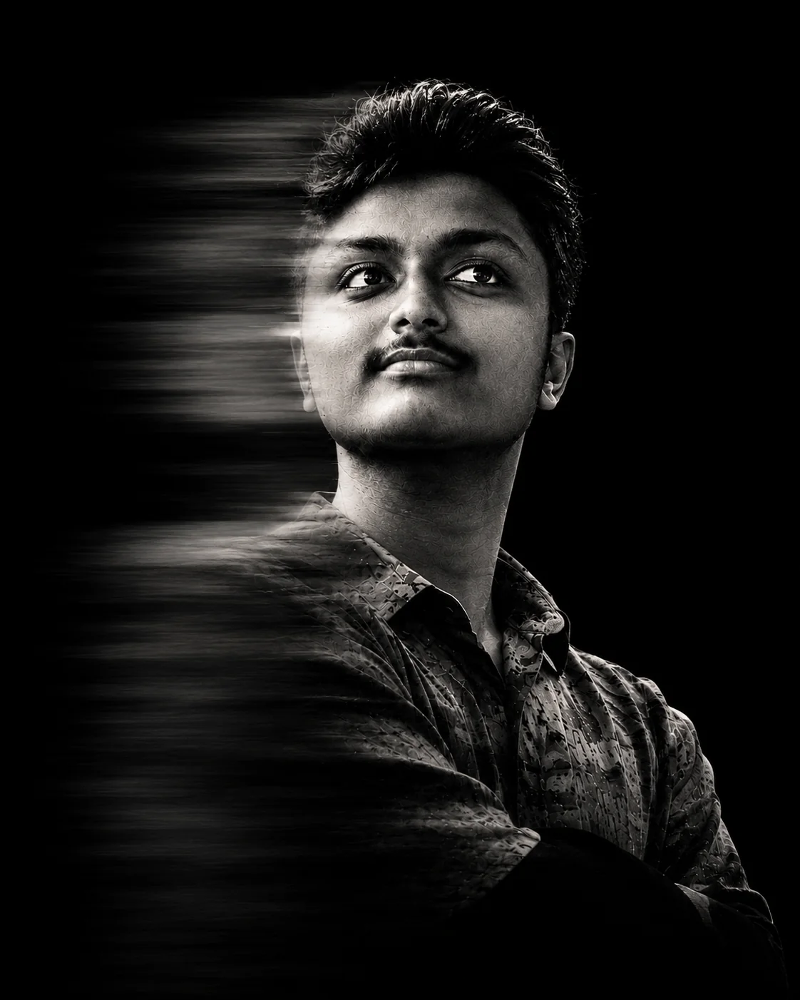
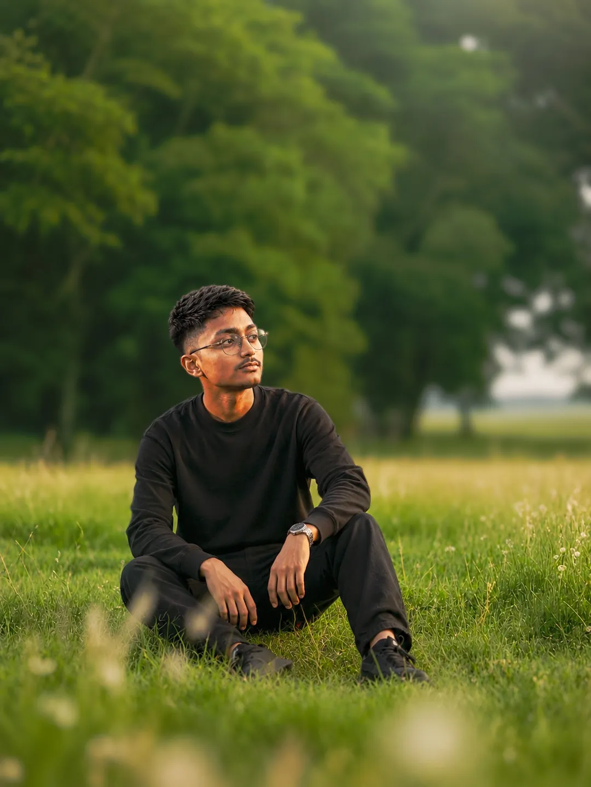
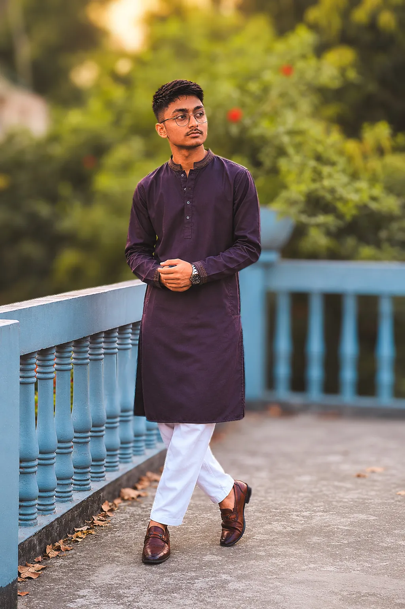
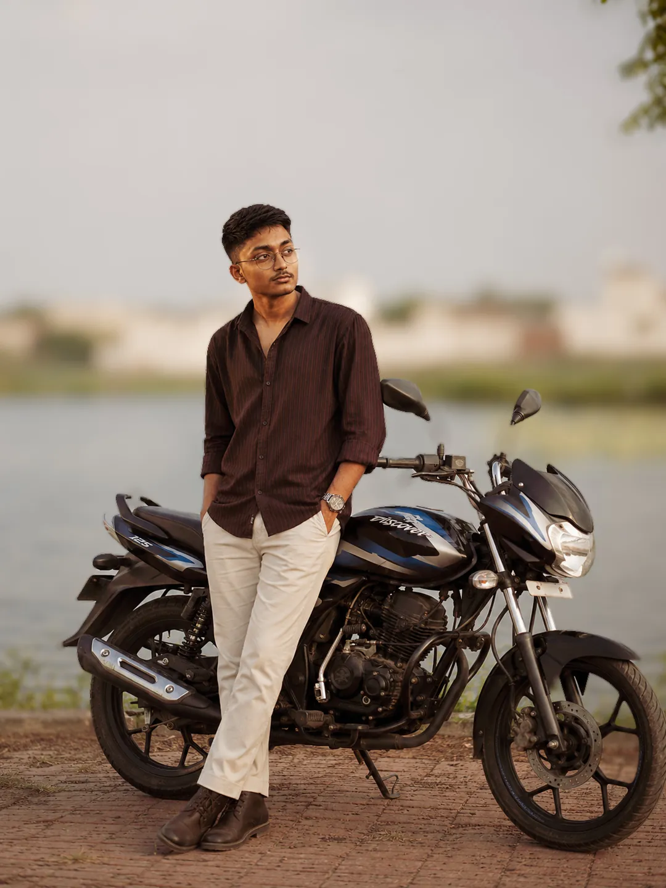

The Autobiography
My Life, In Stories.
Every chapter, written in my own words — the stage and the silence, the code and the football, the battles nobody sees, the people I love and the future I am building.
- 21
- Stories
- 106
- Chapters
- 44
- Minutes
- 4
- Themes
Chapters 03 – 23
Choose a Story
Showing 21 of 21 stories

03 2 minVoice & CraftMy Journey in Public Speaking
Read story 04 3 minHeart & Values
04 3 minHeart & ValuesThe Silence Behind My Personality
Read story 05 2 minHeart & Values
05 2 minHeart & ValuesThe Battles Nobody Sees
Read storyThe Student With Bigger Dreams
Read storyFrom Curiosity to Code
My Love for Programming and Technology
Read story
08 2 minLife & PlacesFootball: More Than a Game
Read story
09 2 minVoice & CraftA Mind That Creates
My Creative Side
Read story
10 2 minLife & PlacesPeople, Places and Memories
My Student Life
Read story 11 2 minDreams & Growth
11 2 minDreams & GrowthThe Future I Am Building
My Dreams, Ambitions & Aspirations
Read story
12 2 minHeart & ValuesThe Values I Live By
Loyalty, Respect, Faith & Personal Principles
Read storyThe Person I Am Becoming
Growth, Lessons & Self-Discovery
Read story 14 2 minHeart & Values
14 2 minHeart & ValuesMy Roots & The People Behind My Journey
Read story15 2 minVoice & CraftBuilding My Own Digital Identity
Creativity, Projects & Innovation
Read story
16 2 minLife & PlacesThe Places That Shape Me
My Experiences & Journey
Read story17 2 minHeart & ValuesMy Philosophy of Life
What I Believe and What I Stand For
Read storyA Letter to My Future Self
My Hopes for Tomorrow
Read storyWhere My Story Began
My Childhood & Early Life
Read storyMy Leadership Journey
Learning to Lead and Take Responsibility
Read storyLearning Beyond the Classroom
My Relationship with Knowledge
Read storyThe Little Things That Define Me
My Favourite Things, Interests & Personal Preferences
Read story23 3 minDreams & GrowthMy Life, My Story
An Unfinished Journey
Read story